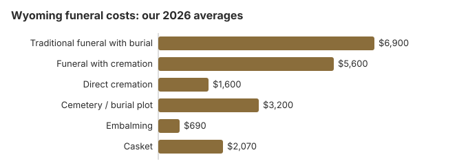

Funeral Costs in Wyoming: What Families Pay in 2026
Most Wyoming families, about 65%, choose cremation, and the gap explains part of that: direct cremation starts near $1,600 on our 2026 estimate, while a traditional funeral averages about $6,900. A Wyoming funeral is rarely one bill, so this page separates the pieces, then covers the state's $1,500 payment for people on POWER, SSI or Medicaid, the 24-hour wait before cremation, and death records from Cheyenne.
Wyoming Funeral Prices, Piece by Piece
Each figure is our Wyoming estimate. The Wyoming State Board of Funeral Service Practitioners licenses funeral homes but does not set their prices, so actual quotes differ from one home to another.
| Service or item | Wyoming average | Usual spread |
|---|---|---|
| Traditional funeral with burial | $6,900 | $5,175 – $8,970 |
| Funeral with cremation | $5,600 | $4,480 – $7,280 |
| Direct cremation | $1,600 | $1,120 – $2,240 |
| Cemetery / burial plot | $3,200 | $1,600 – $6,400 |
| Embalming | $690 | $500 – $1,500 |
| Casket | $2,070 | $690 – $5,520 |
How the Wyoming figures are made: our model produces these statewide estimates. We did not poll Wyoming funeral homes, and the figures are neither a quote nor professional advice. Details are in our method alongside the disclaimer.
State sources: Wyoming State Board of Funeral Service Practitioners; W.S. 42-2-103(c); W.S. 18-3-504(c).

The Cheapest Wyoming Arrangements
| Arrangement | About | What you get |
|---|---|---|
| Direct cremation | $1,600 | No viewing or service; the board's rules require 24 hours to pass first (035-4 Wyo. Code R. 4-5). |
| Direct burial | $3,450 | Burial without embalming or a viewing; the cemetery charges separately for the plot and for opening and closing. |
| Green burial | $3,795 | No embalming, with a shroud or biodegradable casket; ask which Wyoming cemeteries permit it. |
| Cremation + memorial | $5,600 | A memorial held some time after the cremation |
| Traditional funeral | $6,900 | Viewing and funeral, followed by burial |
Public Money for a Wyoming Funeral
- The state's $1,500 payment leaves out cemetery costs, though it can add up to $500 to take a qualifying veteran to the veterans cemetery (W.S. 42-2-103(c)).
- Social Security's $255 is paid only to an eligible surviving spouse or child, who must call 1-800-772-1213 to apply within two years of the death.
- If you paid for a Wyoming veteran's funeral, VA Form 21P-530EZ claims part of it back. Deaths on or after October 1, 2026 that were not service-connected qualify for an allowance of up to $1,032 for burial and another $1,032 for the plot; see our veteran burial benefits guide.
- For Medicaid and charity help, see the funeral payment assistance guide and our page on how to pay for a funeral with no money.
Educational Resources
- Funeral Consumers AllianceIndependent nonprofit consumer advocacy for funeral rights
- FTC Funeral RuleThe federal rule protecting funeral consumers
- Funeral Insurance GuideCompare final expense and burial insurance options
- Best Burial Insurance CompaniesSide-by-side comparison of top burial insurance providers
- Payment Assistance GuideGovernment programs and financial help for funeral costs
- Insurance Plan ComparisonCompare coverage, premiums, and payout speed across providers
Compare Funeral Costs
- Average Funeral Cost in 2026National cost breakdown with real prices
- Cremation vs. Burial Cost ComparisonSide-by-side price comparison to help you decide
- Funeral Cost BreakdownEvery line item explained: know what you're paying for
- Cheapest Funeral OptionsLower-cost alternatives, with typical price ranges
- Direct Cremation: Most Affordable OptionNFDA 2023 median $2,645 with a family-supplied container (latest available)
- How to Compare Funeral PricesStep-by-step guide to getting the best price
Federal Protections and Complaints in Wyoming
If you believe a funeral home in Wyoming has violated these rights, you can file a complaint with the FTC at ftc.gov or contact the Funeral Consumers Alliance for guidance. To report a Wyoming funeral home, use the board's public complaint process. Its office in the Emerson Building no longer takes walk-ins, so call 307-777-5403 to set up a visit.
Cremation Against Burial in Wyoming
Cremation
- From $1,600 for direct cremation
- From $5,600 with a service
- No cemetery plot
- A memorial can come weeks later
- About 65% of Wyoming families choose it
Traditional Burial
- From $6,900 for the funeral itself
- From $3,200 for a plot
- A vault or liner is usually required by the cemetery
- A fixed place to visit
- Metal casket: about $2,500 national median (NFDA 2023 General Price List Study); Wyoming prices vary by seller
Wyoming Cremation and Burial Guides
The Wyoming cremation and burial pages give the detail:
Cremation Costs in Wyoming
For the 65% of Wyoming families who choose cremation: direct cremation from $1,600, cremation with a service from $5,600, urns, scattering rules and other ways to remember someone.
Burial Costs in Wyoming
Plot prices from $3,200. Once a casket, an outer container, a headstone and the grave fees are added, a full Wyoming burial reaches $15,550 to $20,050.
Family-Led Funerals in Wyoming
Wyoming is not on the Funeral Consumers Alliance list of nine states that require a funeral director, so a family that wants a home funeral or a less commercial approach can do much of the work itself. The death certificate, transport and disposition paperwork still have to be completed. If you take on part of the work yourselves, ask the local registrar early which forms it will need from you. Our home funeral guide walks through the steps.
Why Wyoming Quotes Differ
Local living costs, competition and distance all show up in a Wyoming quote. In a large state with few people, ask whether the price includes mileage for carrying the body, and get that figure in writing with the rest of the quote. Prices across the Mountain region tend to sit below the $8,300 US median, and within Wyoming a home in Cheyenne can price 10-30% higher than one in a smaller town.
Wyoming Charges Worth Querying
Most surprises on a Wyoming bill come from add-ons like this one:
- Being told embalming is required. Wyoming law seldom requires it, so ask which rule the home has in mind.
Wyoming City Estimates
Prices vary between Cheyenne, Casper and Wyoming's other cities. Our estimates for each:
Planning a Wyoming Funeral in Order
When arranging a Wyoming funeral, doing things in this order heads off the costliest mistakes:
- Settle on cremation or burial: cremation in Wyoming or burial in Wyoming.
Ordering death records from Cheyenne
Wyoming's fee is $25 for the first copy and $20 for every one after it, so a family wanting four for the bank, insurer, pension and title office pays $85 (Wyoming Department of Health, certified copy application; checked October 29, 2026).
- Who can order: the state seals a death record for 50 years, and until then only relatives or people with a legal or financial stake, such as an insurer claim, can get a copy.
- Where to send it: mail or bring the application to Vital Statistics Services at 2300 Capitol Avenue, Cheyenne, WY 82002; questions go to 307-777-7591.
Wyoming's funeral board, state and county help, and veterans cemeteries
Wyoming's funeral homes are licensed by the Wyoming State Board of Funeral Service Practitioners (307-777-5403), the office for complaints about prices, pushy or misleading selling, or a home that refuses to give out its price list.
A Wyoming family may arrange much of a funeral itself, because Wyoming is missing from the Funeral Consumers Alliance list of nine states where a funeral director must handle parts of after-death care. The death certificate and the disposition permit still have to be filed.
If the family chooses cremation, the board's rules require a 24-hour wait first (035-4 Wyo. Code R. 4-5).
Help with the cost
For a person on POWER, SSI or Medicaid without enough estate, Wyoming pays up to $1,500 toward burial or cremation after other resources are used, plus up to $500 to carry a qualifying veteran to the veterans cemetery (W.S. 42-2-103(c)). Cemetery costs are not included. For others without means, the county commissioners pay (W.S. 18-3-504(c)). (Source: W.S. 42-2-103(c); W.S. 18-3-504(c).) Only a surviving spouse or child who qualifies can get Social Security's $255 lump sum, and they have two years to claim it; the funeral home cannot collect it.
Veterans cemeteries
The funeral home reserves a grave at Cheyenne National Cemetery (307-778-7316) by calling 800-535-1117, the VA's National Cemetery Scheduling Office. Oregon Trail State Veterans Cemetery (307-235-6673), which the state runs, takes requests directly.
Next steps in Wyoming
- Ask each Wyoming funeral home for its General Price List; under the FTC Funeral Rule it must give you one in person.
- Find out whether embalming is really needed for what you have planned.
- If the person was on POWER, SSI or Medicaid, ask the Wyoming Department of Family Services about the $1,500 payment.
- Before buying a private plot for a veteran, check Cheyenne National Cemetery through the funeral home.
- Report a home that withholds its price list, or bills above it, to the board at 307-777-5403.
Frequently Asked Questions
What will a Wyoming funeral cost in 2026?
A full traditional funeral in Wyoming comes to about $6,900 on our estimate, 17% under the $8,300 national benchmark. Cremation with a ceremony is about $5,600 and direct cremation about $1,600, while a cemetery plot adds roughly $3,200. Quotes vary from home to home, so compare a few.
How much less does cremation cost than burial in Wyoming?
A lot. Direct cremation starts at about $1,600. A traditional funeral with burial comes to around $6,900 without counting the plot or vault, so most Wyoming families save at least $5,300.
What are a Wyoming family's rights at a funeral home?
Under the FTC Funeral Rule you are entitled to an itemized price list, to prices over the phone, and to buy only what you want. The Funeral Consumers Alliance does not count Wyoming among the nine states that make a funeral director mandatory. The Wyoming State Board of Funeral Service Practitioners licenses homes and takes complaints at 307-777-5403.
How do Wyoming families lower funeral costs?
Start by comparing two or three General Price Lists from Wyoming homes, line by line. If burial on family land appeals, ask the county what permits and paperwork it needs before planning on it. Direct cremation, at $1,600, is the cheapest option in the state.
Does Wyoming require embalming?
Rarely. Under the FTC Funeral Rule a Wyoming home may not call embalming a legal requirement when it is not one, and the price list must make clear that, outside special cases, embalming is not required. Ask any provider who says otherwise to point to the law or cemetery rule. Refrigeration is the usual alternative when there will be a short delay.
How does Wyoming compare with other states on funeral prices?
Lower than most. Our $6,900 Wyoming average for a traditional funeral is 17% under the $8,300 national median, and Mountain states in general price at the moderate to low end.
What costs least in Wyoming?
Direct cremation, about $1,600, covering transport, the cremation and the return of the ashes. For a burial, direct burial with no viewing or ceremony runs about $3,450 in Wyoming before cemetery fees, making it the lowest-cost burial.
How can I find an affordable Wyoming funeral home?
Ring several Wyoming homes and ask for prices; the FTC Funeral Rule says they must give them by phone. A casket or urn bought elsewhere has to be accepted, with no fee for using it.